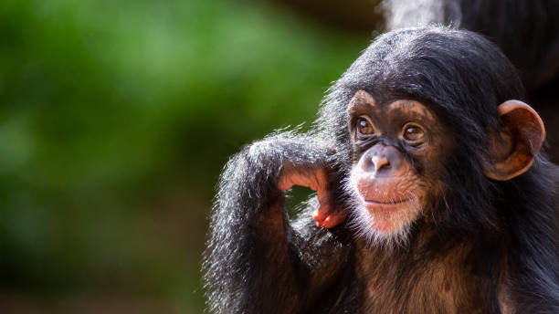

Site oficial sobre todos os tipos de macacos

de acordo com a arvore genealogica dos primatas, os macacos existem a mais de 100 milhoes de anos
são animais mamiferos e muito sociaveis.
os pelos dos macacos apresentam diferentes tonalidades a depender da espécie estudada.
aqui vão 5 fatos sobre macacos
- Os macacos-pregos são mestres em usar ferramentas. Eles são capazes de usar pedras e pedaços de pau para abrir frutas de casca dura, de acordo com a Adema
- Cada macaco-prego tem um estilo de cabelo diferente. Assim como os humanos, cada macaco-prego possui um estilo único de pelos.
- O grito do macaco bugio é mais forte que um avião a jato; A vocalização dos macacos bugios é tão forte que pode ser ouvida a quilômetros de distância.
- O macaco sagui é o menor macaco do mundo: Com apenas 14 a 16 centímetros de corpo (sem a cauda), ele cabe na palma da mão.
- Os macacos-pata são os mais rápidos:
Eles podem alcançar velocidades de até 56 quilômetros por hora,
ultrapassando a velocidade máxima de um corredor humano profissional como Usain Bolt.